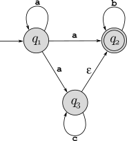
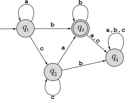

Consider the regular language \(L=\{w\,|\,w\in\{0,1\}^*\) and the 4th symbol from the beginning of \(w\) is \(0\}\).
Design a DFA that recognizes \(L\), and draw the state diagram clearly marking start state and final states. Your DFA should have 6 states, with a single final/accepting state.
Redraw your state diagram from part a, turning the start state into a final state, turning the final state into the start state, and reversing the direction of each edge.
Is this a valid finite automaton, and if so is it deterministic or nondeterministic? Briefly explain why.
Are any states in this new state diagram unreachable (and so unnecessary)? If so, remove them and draw the new diagram.
Describe in English the language accepted by this finite automaton.
A binary string \(w\) is “framed” if \(|w|\geq 4\) and it begins with “01” and ends with “10”. Create a simple 5-state NFA that recognizes all framed binary strings, and then convert that to an equivalent DFA. Make sure every state in your final DFA has exactly one transition out for every symbol in the alphabet.
Use the NFA to DFA conversion procedure described in the book to convert the following NFA into an equivalent DFA:

For each of the following regular expressions, first give two strings that are members of the language and two that are not (so four strings for each one), and then give a succinct English description of the language.
\((\texttt{0}\cup \texttt{10})^*\)
\((((\texttt{00})^*(\texttt{11}))\cup\texttt{01})^*\)
Use the process described in the proof of Lemma 1.55 (page 67) to create an NFA that accepts the language described by the regular expression \((0\cup 11)^*(10^*\cup\varepsilon)\).
Derive a regular expression to describe all binary strings with even parity (those with an even number of 1’s) by performing the following steps: Draw the DFA from class that recognizes binary strings with even parity, and then convert this DFA into a regular expression using the process described in the book (pages 69–73). Show each step (the initial GNFA and each step of state removal).
Convert the following DFA into a regular expression, showing each step as in the previous problem:

For each language below, use the pumping lemma (page 78) to prove that it is not regular:
\(L_1=\{w\,|\, w\in\{\texttt{a},\texttt{b}\}^*\) and \(w\) has more \(\texttt{a}\)’s than \(\texttt{b}\)’s\(\}\)
\(L_2=\{w\,|\, w\in\{\texttt{(},\texttt{)}\}^*\) and \(w\) is a properly balanced string of parentheses\(\}\). A string of parentheses is properly balanced if every open parenthesis is matched with a close parenthesis, and pairs are nested inside each other properly. We don’t need to be any more formal at this point, but consider some examples: \(\texttt{(()())}\) and \(\texttt{(()(()()))}\) are properly balanced, while \(\texttt{(()))(()}\) and \(\texttt{(()))}\) are not.